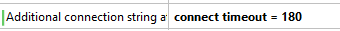

This document describes some useful details on the deployment process to a GeneXus Prototyping Cloud (when Deploy to cloud property is set), and common issues that may arise. To learn how to deploy an application in the cloud follow the Deploy to cloud: Step by Step guide.
Whenever a KB is created or checked out from a GeneXus Server, a GUID (unique universal identifier) is assigned to it. Also, when an environment is created, a GUID is assigned to it as well.
GeneXus Account uses both GUIDs (together) as "application id". That is, the first time an application (KB/Environment) is run using deploy to cloud, it's cataloged in GeneXus Developer site. This cataloging includes, for each application, information on the configuration: PK (KB GUID and Environment GUID), the owner (GeneXus user), the KB Name, the Environment Name, the Web Server, the Virtual Directory, the DB Name, etc.
Every time the application is run, this information is sent to GeneXus Account to be updated.
There are two types of requests: CREATE and CHECK SETTINGS.
Create: the first time an application is run, and upon every modification of a "sensitive" property (e.g. Virtual Directory, DBName, GAM, etc.)
Check settings: every time the application is run.
The main difference between the two types is that the "create" request must be made "online", and property values are validated (e.g. Virtual Directory and DB Name availability, application ownership, etc.) When that fails, the build process (i.e. program specification/generation/compilation) stops. On the other hand, "check settings" requests do not need to be made "online" because, when it fails, the build process continues anyway.
They're stored using Windows Credential Manager.
You can remove this credential from IDE option Tools > GeneXus Account by unchecking "Remember my password" or directly from Windows Control Panel > User Accounts > Credential Manager > Windows Credentials > Generic Credentials by removing "GXCredential4GXTechnical" credential.
Example: you have a Java Environment which had created a DB "Invoicing", and you want to create a Ruby environment accessing this DB.
Just set "Reorganize Server Tables" Ruby generator property to "No", and set Data Store properties with the Java Environment values, that is: copy Server Name, DataBase Name, User and Password from Java environment to Ruby environment.
If you are using a proxy, you have to add the following exceptions in order to deploy the app and create the database:
<server-name> tcp/80 <server-name> tcp/443 <server-name> tcp/3306 (mysql) <server-name> tcp/1433 (ms sqlserver)
e.g.:
trialapps.genexus.com tcp/80 trialapps.genexus.com tcp/443 trialapps.genexus.com tcp/3306 (mysql) trialapps.genexus.com tcp/1433 (ms sqlserver)
trialapps2.genexus.com tcp/80 trialapps2.genexus.com tcp/443 trialapps2.genexus.com tcp/1433
and also:
www2.genexusnet.com tcp/443 www2.genexusnet.com tcp/80 www2.gxtechnical.com tcp/80 www2.gxtechnical.com tcp/443
A typical error you can get is the following:
error: GXtechnical service exception: "The remote server returned an error: (407) Proxy Authentication Required.". ========== GXtechnical Cloud Request started ========== error: GXtechnical service exception: "The remote server returned an error: (407) Proxy Authentication Required.". GXtechnical Cloud Request Failed
Note: GeneXus requires the proxy used for the connection can support http 1.1 protocol
Building file gx_last_transfer.zip... Uploading 2944 Kbytes error: Could not deploy Application to cloud Error: The operation has timed out
You may get this error if you are running Windows on a VirtualBox virtual machine when you use NAT network mode. This mode has some restrictions that enable you to browse the web but don't allow you to deploy your app on the cloud.
Solution: Try to change your virtual network mode to a different one.
References: http://www.virtualbox.org/manual/ch06.html
========== Populate Data started ========== Type:GeneXus.Data.GxADODataException.DBMS Error Code:-2.Connection Timeout Expired. The timeout period elapsed while attempting to consume the pre-login handshake acknowledgement. This could be because the pre-login handshake failed or the server was unable to respond back in time. The duration spent while attempting to connect to this server was - [Pre-Login] initialization=315; handshake=12432; Populate Data Failed Rebuild All Failed
When you perform deploy to cloud and use populate data associated to transactions you may get this error in the output.
Solution: Set a large connect timeout in Additional connection string attributes property

The requested resource (/Id2eaaa0f5f95e44cfbffa6c01aff366f6/servlet/webpanel1) is not available.
When you run with Java, you may get this error if you have a local tomcat version 7.x installation.
Solution: If you're using apps2 set generator property "Use Annotations for servlet definition" = No. If you're using apps4 set generator property "Use Annotations for servlet definition = Yes.
java.lang.UnsupportedClassVersionError: tickets : Unsupported major.minor version xx.0 (unable to load class tickets)
org.apache.catalina.loader.WebappClassLoader.findClassInternal(WebappClassLoader.java:2335)
org.apache.catalina.loader.WebappClassLoader.findClass(WebappClassLoader.java:976)
org.apache.catalina.loader.WebappClassLoader.loadClass(WebappClassLoader.java:1451)
org.apache.catalina.loader.WebappClassLoader.loadClass(WebappClassLoader.java:1329)
When you run with Java, you may get this error if you have a JDK higher than the java running in the cloud.
Solution: If you're using apps2 or apps4 set generator property Compiler Path to a compiler (javac.exe) from JDK 7 or lower.
For Squid try adding: ignore_expect_100 on (http://squid-web-proxy-cache.1019090.n4.nabble.com/http-returncode-417-and-POST-request-td3031566.html).
User or password provided is not valid.
If you already have a user, set it using "Tools/Gxtechnical's user" option
If you don't have a user, create it here.
Complete error message: "\error: Exception trying to authenticate user: "There was no endpoint listening at https://www2.genexusnet.com/wside/adeployserverslist.aspx?wsdl that could accept the message. This is often caused by an incorrect address or SOAP action. See InnerException, if present, for more details.".
This error means you're trying to create an application and GeneXus Account is not accessible. Check your internet connection.
If this error appears in the output, go to http://www.gxtechnical.com/ and confirm your account (your email address has to be validated)
This error appears for example when you log in using your email instead of your username. Use your username instead.
Complete error message: "error: Authentication error: "'http://apps2.genexusx.com/MyApp/' application directory is not available.".
This error means another application is already using this server/virtual directory, so it cannot be used to deploy another application. Change server or virtual directory.
Remember that "application" means KB GUID + Environment GUID.
Note: prior to X Evolution 2 Upgrade 3 the message was: "Authentication error: [URL] application directory is not available."
Complete error message: "error: Authentication error: "Cannot create 'MyDB' database because it already exists.".
This error means another application is already using this Server/DbName, so it cannot be used to deploy another application. If you're trying to create another DataBase, change "Database name" property. If you want to access an existing DB, set "Reorganize Server Tables" property to "No" and set the right credentials (server, DBname, user and password) to access this DB.
Complete error message: "Internal error: Function call failed (Login failed for user 'xxxxx.) The reorganization process was not successfully completed."
Check Server Name Property and Deploy Server URL property. Remember that the application and DB must be in the same server when d2c is being used.
Once an application is deployed the owner is the Gxtechnnical's user that had deployed it.
This error means a GXtechnical's user that is not the owner is trying to change DB or Virtual Directory.
This error means the user does not have the privileges to deploy an application to Artech's cloud. Check your user information with the company's Contact Manager.
This error means the selected combination of DBMS, Generator and Cloud Server is not available.
Check Notes section of this document for further information.
"NNN" is the database server where the tables are being created.
Check the Database name property.
Note: prior to X Evolution 2 Upgrade 3 the message was: "Error: DB Server not available"
"NNN" is the application server where the application is being deployed.
Check the Deploy Server URL property
Note: prior to X Evolution 2 Upgrade 3 the message was: "Error: Application Server not available"
========== Web config update started ========== Updating web config ... Web config update Success Building file gx_last_transfer.zip... Uploading 6219 Kbytes error: Could not deploy Application to cloud Error: O servidor remoto retornou um erro: (417) Expectation failed.
This problem may happen in some situation when the server is processing the request header in order to accept the data from the workstation. To avoid this verification, add the following information in the genexus.exe.config, under the <system.net> tag:
<settings>
<servicePointManager expect100Continue="false" />
</settings>
This message appears:
Building file gx_last_transfer.zip... Uploading 34692 Kbytes error: Invalid URI: The format of the URI could not be determined. Run Developer Menu Failed"
Check Deploy Server URL property ensuring that includes http or https
544 Kbytes left 289 Kbytes left 34 Kbytes left Deploying website error: Could not deploy Application to cloud Error: The underlying connection was closed: A connection that was expected to be kept alive was closed by the server. Run Home Failed
Solution
Run the app again (press F5).
========== Execution started ========== ... waiting for server ... error: Could not reach web server Execution Failed Run Home Failed
Notes:
Solution
Run the app again (press F5) or execute the associated URL for further information about the error.
Exception Details: System.BadImageFormatException: Could not load file or assembly 'sapnco' or one of its dependencies. An attempt was made to load a program with an incorrect format.
Solution
Use the 64bits version of the sapnco*.dll. More information at ERP Connector - Generating the application with GeneXus .NET Generator.
Internal error: Function call failed (Login failed. The login is from an untrusted domain and cannot be used with Windows authentication.)
This internal error usually happens when the Data Store is local and the developer starts using Deploy To Cloud. Remote Data Stores do not work with trusted connections. This error occurs when the Data Store has the Use trusted connection property and the Deploy to cloud property set to True.
Soution
Go to the Data Store and set Use Trusted Connection = False.
Prototyping features and Deployment of applications for Smart Devices
| Backlinks | |
| Deploy to Cloud Troubleshooting | Deploy to cloud: Step by Step |
| Toc:Native Mobile Applications Development |